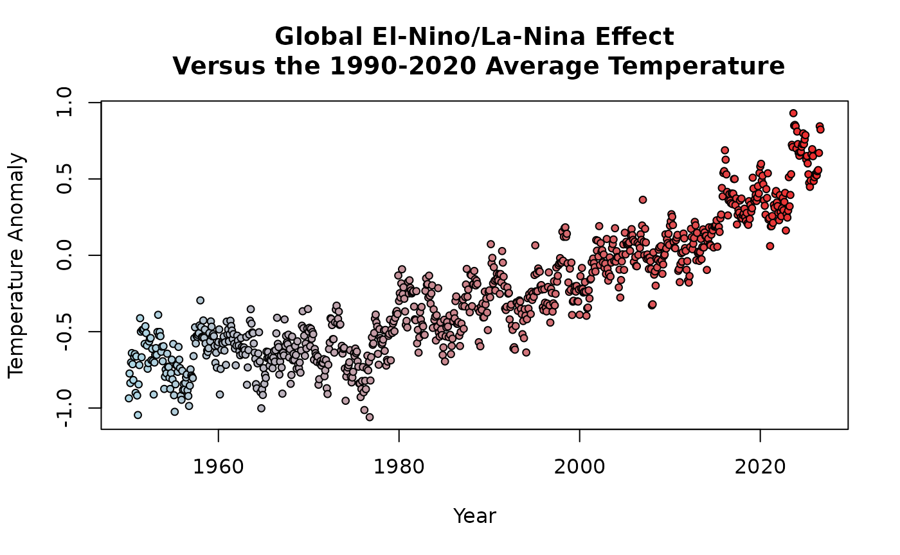

The first thing to do is to load the library.
This will enable the use of the data, called el_nino. Next, load and assign the data to a data frame.
data <- as.data.frame(SquareR::el_nino)Next, we can simply plot the data with R’s default functions, like so, adding a day value to “Months,” and changing the vector to be a date:
theme <- colorRampPalette(c("lightblue", "firebrick2"))
plot(data$Month, data$`Temperature anomaly`,
xlab = "Year",
ylab = "Temperature Anomaly",
main = "Global El-Nino/La-Nina Effect\n Versus the 1990-2020 Average Temperature",
pch = 21,
cex = 0.75,
bg = theme(920))